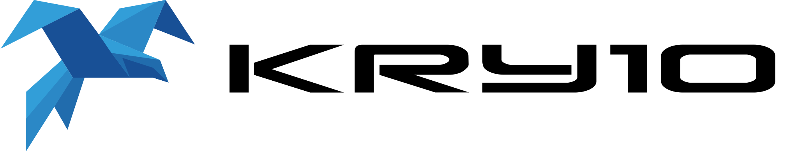

The seL4 Foundation thanks Kry10 for becoming a Gold sponsor of the seL4 Summit 2024.
Kry10 offers a full-featured operating system on top of the seL4 kernel, along with tooling, services, key management and more. The Kry10 Platform is a fast and easy way to build highly secure, next-generation cyber-physical devices. It leverages the verification of seL4 to provide a secure, self-healing, truly dynamic system with minimal downtime, even during upgrades.
Kry10 is an Endorsed Service Provider of the seL4 Foundation, offering support to enable seL4-based secure projects to be affordable, maintainable, and remotely manageable.
See here if you are interested in sponsoring the seL4 Summit 2024.
